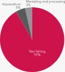

La sobrepesca es un problema que está causando la extinción de diversas especies en regiones muy específicas del mundo y aunque el fin no es tan cercano como lo imaginamos, debemos comenzar a tomar medidas para evitar acabar con la fauna marina. Por eso te presentamos los siguientes datos para que miremos el problema de fondo y encontremos una solución a ello.
